Samy Bencherif
A list of my 9 favorite web projects...
-
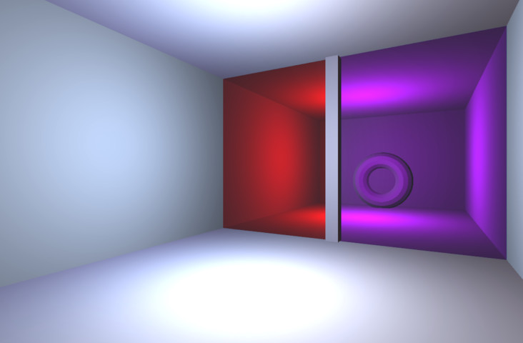
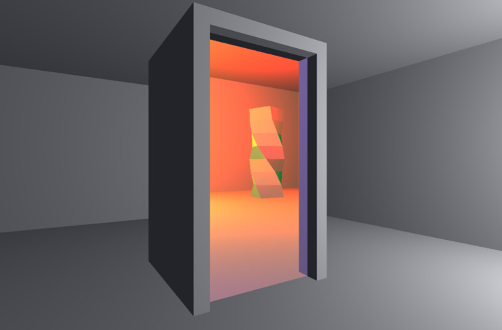
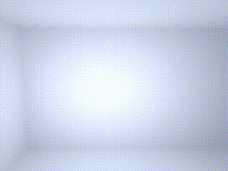
This project is a recreation of the astounding visual effect and gameplay mechanic from the games Narbacular Drop and the Portal series. The World Portal System allows the user to physically merge two regions of space via a planar seam. (Try demo)
-
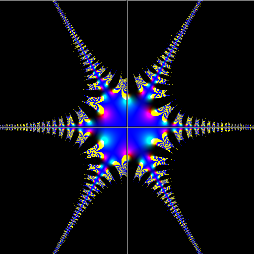
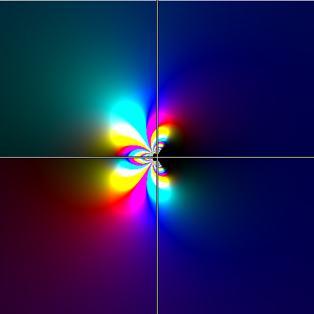
The Complex Gallery features some of my favorite complex functions rendered in four dimensions. (Using color ramps for unperceivable dimensions). The user can add their own expressions to be rendered in real-time.
-
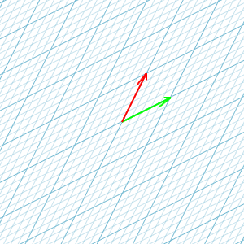
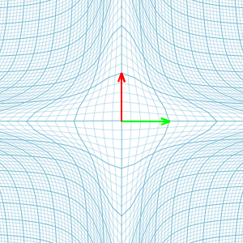
Visualizing Transformations is inspired by a collaborative effort between 3Blue1Brown and Khan Academy. The program allows students to explore different transformations on a coordinate axis in real-time.
-
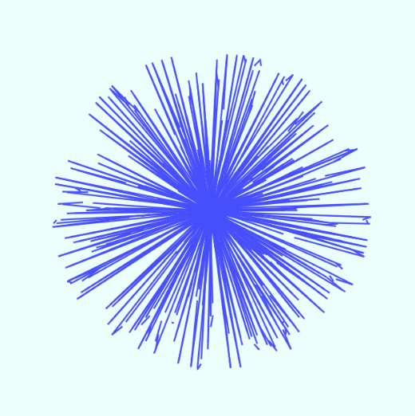
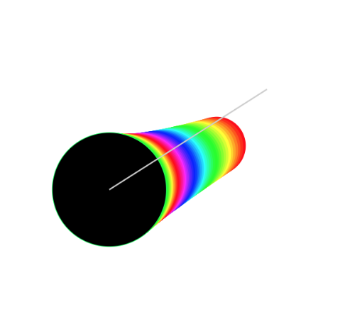
The Min Series is a collection of minimal computer graphics programs—some of which I wrote on my smartphone!
-
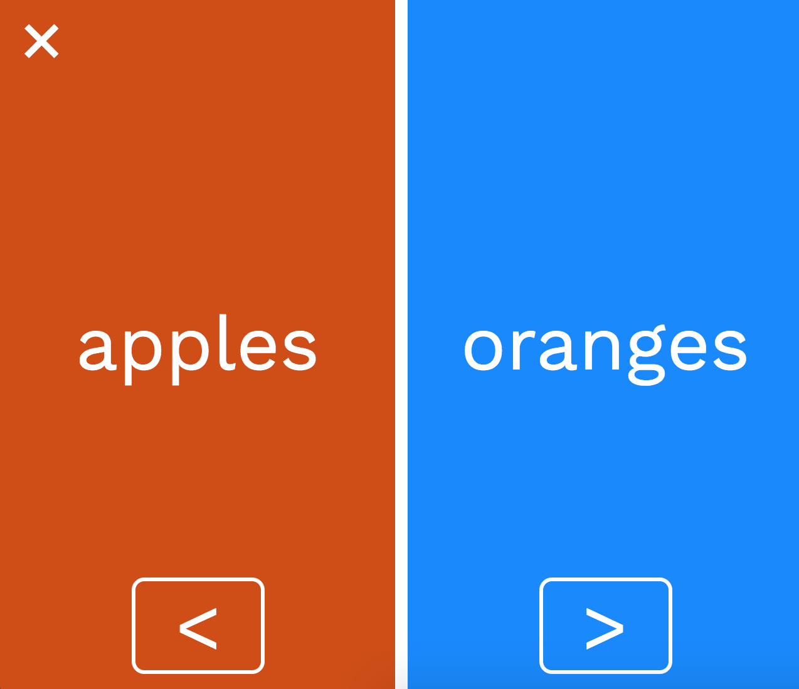
Rank allows you to sort a dataset from greatest to least, but there’s a catch. All comparisons are made by the user, allowing sorting of data with subjective total order. It’s much easier to sort, for example, best to worst movie via tournament style. The app comes together with a clean jQuery user interface.
-
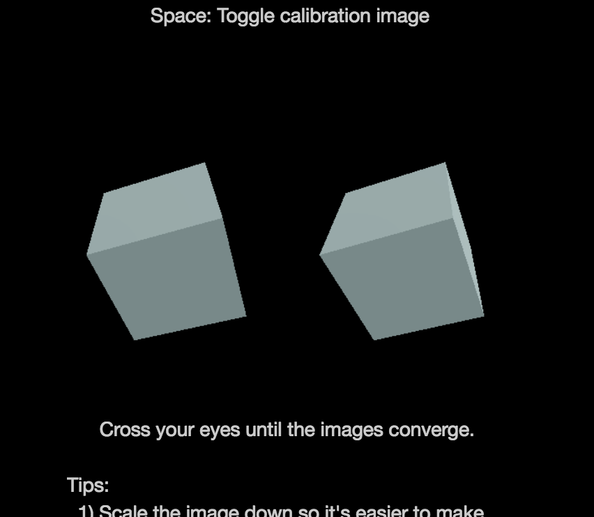
This project was an experiment with multiple renderers in THREE.JS. It displays two perspectives of a spinning cube, which the user can see in 3d if they cross their eyes.
-
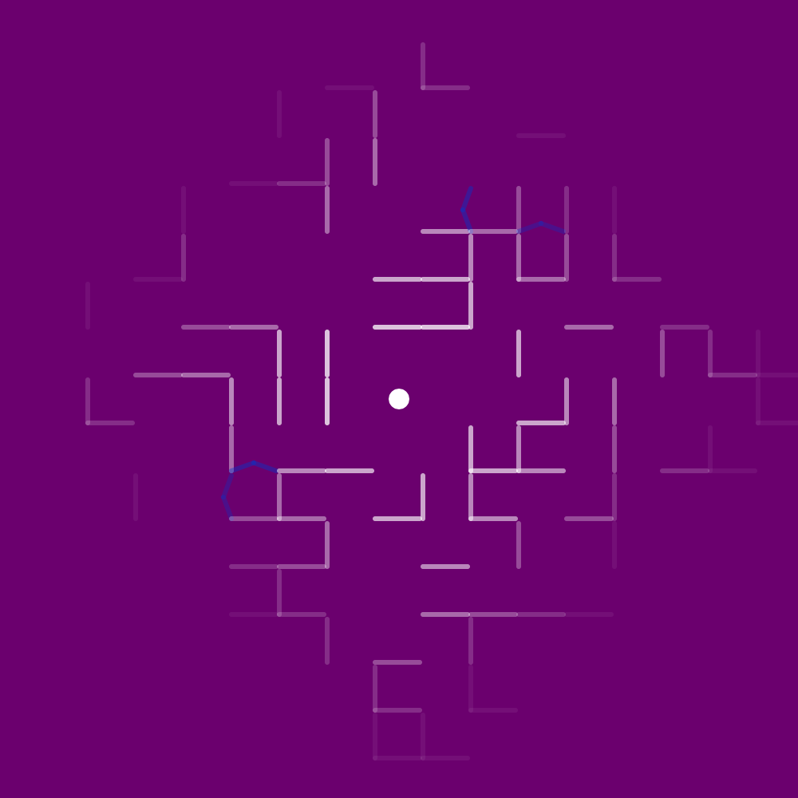
Game of Walls uses md5 to procedurally generate an infinite maze. The maze can be modified by the player. This project was featured on the front page of Codepen.io and has been played by over 4k people.
-
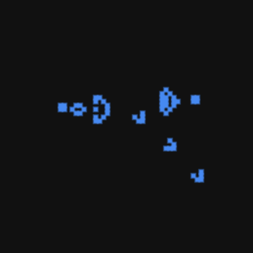
This project is an implementation of Conway’s Game of Life, with a lightweight abstraction that allows users to include their own rulesets.
-
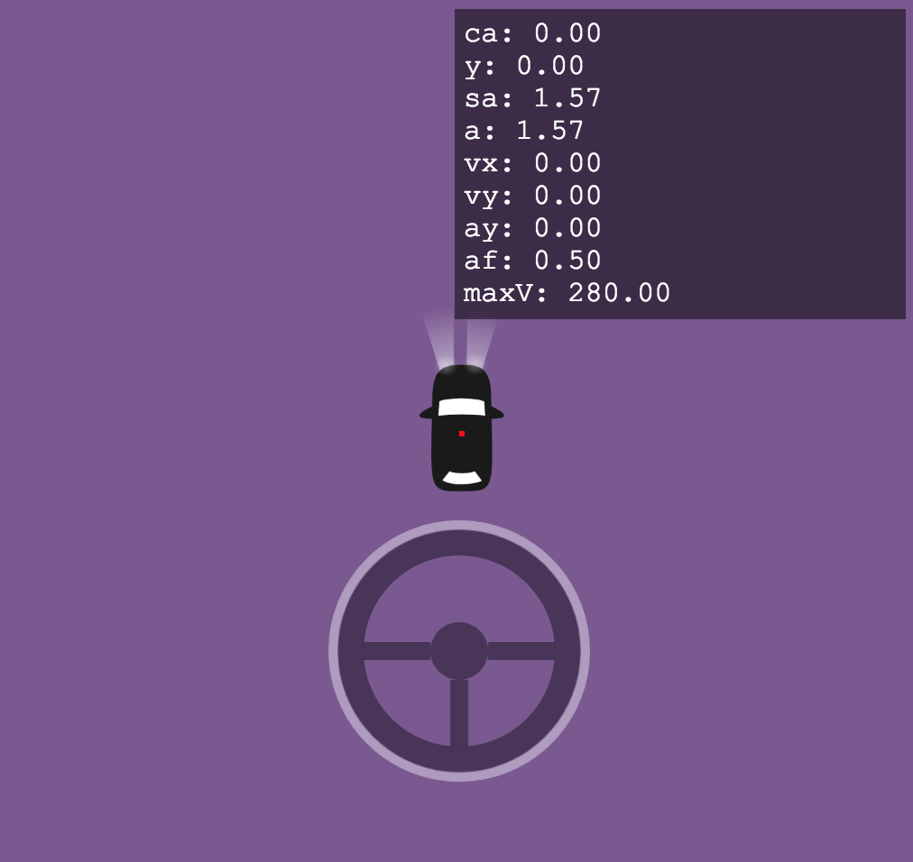
Toy Car is a top down physics simulation of a front-wheel turning, rear wheel driving vehicle. Features both static and kinematic models of tire friction.